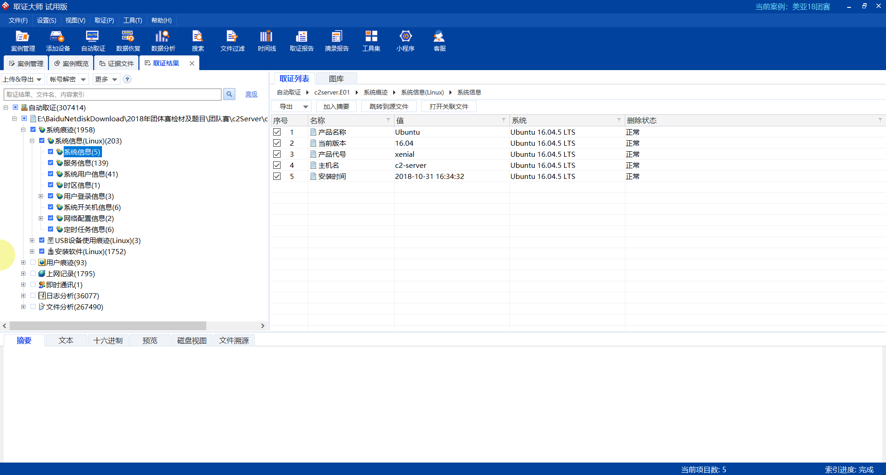

Linux取证

“美亚杯”第四届中国电子数据取证竞赛-团体赛
本次比赛共1 个章节, 120 个小题, 比赛时长300 分钟, 总共120分
单项选择
[单选题] 第A部份 (第 1 至 12 题) : 根据镜像文件 “c2server.E01” 的内容，回答关于黑客控制的命令服务器(C&C服务器)的问题。
1.黑客控制的命令服务器(C&C服务器)是什么版本的系统? (1分)
A. CentOS 7
B. CentOS 6
C. Ubuntu 18.04
D. Ubuntu 16.04
E. Ubuntu 14.04
标记本题
D

[单选题] 2.该C&C服务器 /dev/sda1 的通用唯一标识符 (UUID) 是什么? (1分)
A. a69c799c-7f0e-4191-9748-66a7e6bc37ad
B. 35a727cd-4440-438f-b3dd-0f82d37f8c0e
C. ec593f12-e418-492d-97af-b804b8208d99
D. 4fce5b91-e899-4807-882f-78c9bcfa66e5
E. 07febb97-674c-4cae-803c-19ce92024ce
标记本题
C
直接在取证大师中搜索相关的配置文件，在etc文件夹中搜索fstab,在这个配置文件中找到UUID

[单选题] 3.系统的时区设定是什么? (1分)
A. Asia/Macao
B. Asia/Hong_Kong
C. Hongkong
D. GMT
E. Etc/GMT+8
标记本题
B

[单选题] 4.黑客曾上传受害公司荣科数码(RKD)文件到C&C服务器，上传方式包括: (i)ftp (ii)ssh (iii)telnet (1分)
A. (i)
B. (ii)
C. (iii)
D. (i) and (ii)
E. (ii) and (iii)
标记本题
A
我们将镜像仿真起来，可以利用FTK先挂载，然后创建相应的虚拟机，也可以用仿影，稍微快一点，然后准备绕过密码单用户登录，进入目标系统查看历史操作(用root权限)history，发现有ftp的相关信息，再查看开放的端口netstat -lntp
发现只开放了21端口。


然后根据这个线索在取证大师中查找FTP的日志文件，进行验证
/var/log/transfer.log
导出分析
发现有很多FTP上传信息，验证成功

[单选题] 5.黑客曾使用哪一个文件传输协议(FTP)服务账户，用作登入C&C服务器上传档案? (1分)
A. upload
B. C&C
C. ftpuser
D. root
E. rdkuser
标记本题
A

[单选题] 6.接上题，C&C服务器中使用了哪个系统账户用作使用文件传输协议(FTP)服务? (1分)
A. upload
B. C&C
C. ftpuser
D. root
E. rdkuser
标记本题
C
我们可以查看系统的操作历史记录，可以在仿真之后直接history
也可以在取证大师中的/root/.bash.history
查看命令日志
发现黑客将ftpuser执行了useradd 添加到了用户组，然后再…..

[单选题] 7. 根据黑客上传的档案，你能找到荣科数码路由器的物理地址(Mac Address)是什么? (1分)
A. A0:B4:A5:E6:86:23
B. EC:1A:59:50:F9:02
C. 74:EA:3A:A3:0D:46
D. 8C:0D:76:B0:69:5C
E. 14:91:82:73:6D:FD
标记本题
C
根据他FTP日志，发现他上传的档案在/home/c2/FTP
在这个文件夹中，可以发现黑客传的一个ip.txt
在这里边找到路由器的默认网关
再在arp.txt （一个ip与mac地址对应关系的文档）
找到这个默认网关对应的mac地址


[单选题] 8.黑客在使用什么软件以暴力破解法取得 Wifi的密码? (1分)
A. Wireshark
B. Fern WiFi Wireless Cracker
C. Kismet
D. Aircrack-ng
E. WepAttack
标记本题
D

[单选题] 9.黑客在什么时候将网络摄录镜头的配置文件cam_config_backup.bin上载到C&C服务器? （答案格式 －“本地时间＂：YYYY-MM-DD HH:MM:SS +8） (1分)
A. 2018-11-01 15:13:17 +8
B. 2018-11-01 17:14:26 +8
C. 2018-11-01 17:18:07 +8
D. 2018-11-01 17:18:24 +8
E. 2018-11-01 17:18:28 +8
标记本题
D
查看FTP日志/var/log/transfer.log

[单选题] 10.哪一个网络地址(IP Address)可追查黑客的位置? (1分)
A. 192.168.7.12
B. 218.255.242.113
C. 218.255.242.117
D. 220.246.55.13
E. 220.246.55.160
标记本题
E
同样是FTP文件地址

[单选题] 11.在命令控制服务器(C&C服务器)中找出从数据库服务器盗取的数据档案,该档案包含多少个数据库? (1分)
A. 1
B. 2
C. 3
D. 4
E. 5
标记本题
不会
[单选题] 12.接上题,从该数据库寻找到受害人林胜”Victor”的顾客资料及交易数据是否存在，以及包含以下属于他的什么数据： (i)电邮地址 (ii)信用卡号码 (iii)身份证号码 (1分)
A. (i)
B. (ii)
C. (i) (ii)
D. (i) (ii) (iii)
E. 没有该数据存在
标记本题
不会